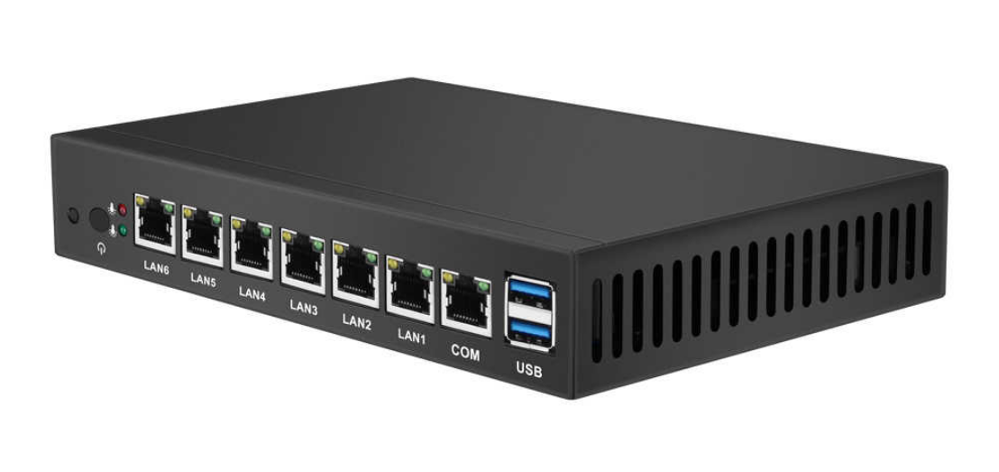
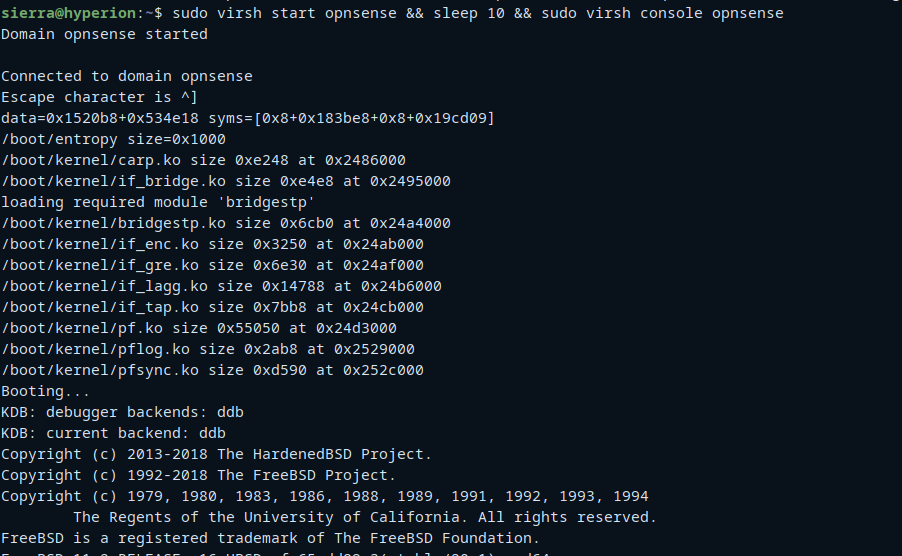
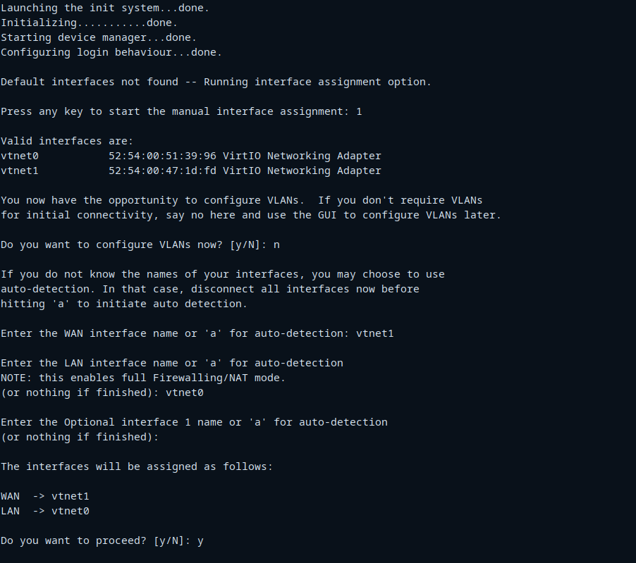
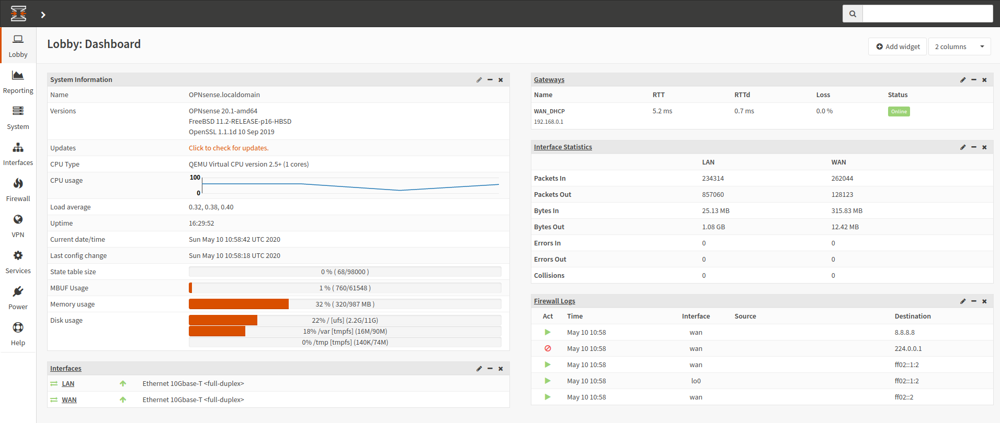

Tidy Bits
The blog where I tell my geek adventures
Installing opnSense firewall on KVM
A couple of months ago I impulsively bought an inexpensive x86 router. It is not really well fitted for anything professional. The processor is just a low end dual core Intel 1007u that does not have neither AES-NI nor SRIOV so it is more like a 10 years old computer with a lot of network interfaces than a real router. The good thing is that it is fanless and although it is definitely not performant at all, it would allow me to play with virtualization, firewalls, software defined networking and all of that things.

After trying FD.io and pfsense I end up installing OPNsense. I really enjoyed playing with it but I had the feeling that I was wasting memory and disk resources by just filtering packets with it. So I decided to virtualize it and use the remaining resources to add more features like a backup service or an IoT gateway.
As the device has six NICs and my idea is to use it at home, I am going to configure one interface for the WAN, four of them for LAN access and the last one will remain connected to the host to allow management access.
+--------------------------------------------------------------------------+
| |
| +--------+ +--------+ +--------+ +--------+ +--------+ +--------+ |
| | | | | | | | | | | | | |
| | enp6s0 | | enp5s0 | | enp4s0 | | enp3s0 | | enp2s0 | | enp1s0 | |
| | (WAN) | | (LAN) | | (LAN) | | (LAN) | | (LAN) | | (MGMT) | |
| +--------+ +--------+ +--------+ +--------+ +--------+ +--------+ |
| |
+--------------------------------------------------------------------------+
In order to not to waste any interface, we will configure the host to forward all the traffic to the OPNsense virtual machine. By doing that, we will be able to use management interface to get Internet access and still be protected through the firewall. The logical configuration will look like the following:
+--------+
| |
+-+ enp6s0 +------------------------+
| | | |
| +--------+ WANBR |
| +-------+ |
+------------------------+ +--+
| vnet1 | (NAT)
+------------------------+ +--+
| +-------+ |
| Opnsense VM |
| +-------+ |
+--+ +------------------------+
| vnet0 |
+----------+ +--------------------------------------+
| +-------+ 10.10.10.0/24|
| LANBR |
| |
| +--------+ +--------+ +--------+ +--------+ +-------+ |
+--+ | | | | | | +--+ +-+
| enp5s0 | | enp4s0 | | enp3s0 | | enp2s0 | | veth1 |
| | | | | | | | | |
+--------+ +--------+ +--------+ +--------+ +-------+
||
+-------+ +--------+
| | | |10.10.11.1/24
(NAT)| veth0 +------+ enp1s0 |
10.10.10.2| | | |
+-------+ +--------+
So let’s get the ball rolling. After installing debian we will download some needed packages and configure our user to execute commands as root.
apt update
apt upgrade -y
apt install -y tmux htop libvirt-daemon-system \
qemu-kvm libvirt-clients bridge-utils libguestfs-tools \
genisoimage virtinst libosinfo-bin sudo
echo "$USER ALL=(ALL) NOPASSWD: ALL" > /etc/sudoers.d/$USER
chmod 0440 /etc/sudoers.d/$USER
We will also need to configure our system to forward IP packets:
sudo echo "net.ipv4.ip_forward=1" >> /etc/sysctl.conf
From a networking perspective, inside our host we will have three main components:
- The LAN bridge.
- The WAN bridge.
- The management interface
The WAN bridge will connect the physical enp6s0 interface with out virtual machine. It is pretty straight forward to configure. We just need to add an anonymous bridge on /etc/network/interfaces .
# WAN interface
allow-hotplug enp6s0
iface enp1s0 inet manual
# WAN bridge
auto wanbr
iface wanbr inet manual
bridge_ports enp6s0
bridge_waitport 0 # no delay before a port becomes available
bridge_fd 0 # no forwarding delay
bridge_maxwait 0
Now let’s configure the LAN bridge. As you’ve seen on the previous diagram, that bridge will have four physical interfaces and one virtual interface called Virtual Ethernet or Veth. These interfaces are commonly used to move traffic between namespaces (i.e. provide internet access to a container) or connect bridges. They are basically a virtual Ethernet wire. We will use it here to connect our management interface (enp1s0) to the firewall by using NAT, as the management interface and the LAN bridge are different networks. This approach will give us several advantages:
- If OPNsense is unavailable we still have access to the host.
- Traffic from the host or the management interface is still going through the firewall and being protected.
- Access to the firewall’s dashboard is available from the management interface.
- Services from the host will be available also on the LAN subnet, as the host has an IP address there.
Adding a Veth pair is pretty straight forward:
ip link add veth0 type veth peer name veth1
We will configure an IP inside the address space of our OPNsense LAN subnet on veth0. Veth1 will be added to the LAN bridge.
ip addr add 10.10.10.2/24 dev veth0
As the host subnet is not the same as the one configured on the OPNsense LAN network, we will add an static route to forward all the packets to firewall LAN gateway through veth0. As the management subnet and the LAN subnet are different, we will also configure a NAT rule on veth0.
pre-up ip route add default via 10.10.10.1 dev veth0
pre-up iptables -t nat -A POSTROUTING -o veth0 -j MASQUERADE
All of these changes will look like that on the /etc/network/interfaces file:
# LAN interfaces
allow-hotplug enp2s0
iface enp1s0 inet manual
allow-hotplug enp3s0
iface enp1s0 inet manual
allow-hotplug enp4s0
iface enp1s0 inet manual
allow-hotplug enp5s0
iface enp1s0 inet manual
# LAN Bridge
auto lanbr
iface lanbr inet manual
pre-up ip link add veth0 type veth peer name veth1
pre-up ip addr add 10.10.10.2/24 dev veth0
pre-up ip link set veth0 up
pre-up ip link set veth1 up
pre-up ip route add default via 10.10.10.1 dev veth0
pre-up iptables -t nat -A POSTROUTING -o veth0 -j MASQUERADE
bridge_ports enp2s0 enp3s0 enp4s0 enp5s0 veth1
bridge_waitport 0 # no delay before a port becomes available
bridge_fd 0 # no forwarding delay
bridge_maxwait 0
bridge_stp on
And finally, let’s configure the management interface with an static IP.
# Managing Network interface
allow-hotplug enp1s0
iface enp1s0 inet static
address 10.10.11.1
netmask 255.255.255.0
We will also configure isc-dhcp-server on the host. To do so we first will need to adjust in which interfaces this server is listening:
sudo echo 'INTERFACESv4="enp1s0"'' > /etc/default/isc-dhcp-server
Then we will add the network lease information on /etc/dhcp/dhcpd.conf:
option domain-name "hyperion.local";
option domain-name-servers 1.1.1.1, 8.8.8.8;
default-lease-time 600;
max-lease-time 7200;
# The server won't attempt to do a DNS update when a lease is confirmed.
ddns-update-style none;
# This DHCP server is the official server for the local
authoritative;
# Subnet offered on the management interface
subnet 10.10.11.0 netmask 255.255.255.0 {
range 10.10.11.24 10.10.11.128;
option routers 10.10.11.1;
}
After finishing applying all these network changes we need to boot up OPNsense to see if it works. We will download OPNsense nano image and increase the size of the image to 8Gb as we don’t want to run out of space. The nano flavor of OPNsense is intended to be installed on an USB drive or a CF card and works straight away without installing it so it is perfect for our use case.
wget https://opn.sense.nz/releases/20.1/OPNsense-20.1-OpenSSL-nano-amd64.img.bz2
bzip2 -d OPNsense-20.1-OpenSSL-nano-amd64.img.bz2
qemu-img convert -f raw -O qcow2 OPNsense-20.1-OpenSSL-nano-amd64.img OPNsense-20.1-OpenSSL-nano-amd64.qcow2
qemu-img resize OPNsense-20.1-OpenSSL-nano-amd64.qcow2 +8G
mv /home/sierra/OPNsense-20.1-OpenSSL-nano-amd64.qcow2 /var/lib/libvirt/images/opnsense201.qcow
Now we will configure the domain xml file that define our virtual firewall. We will give 1gb of ram and one core to the guest OS. We will also connect it to both the LAN bridge and the WAN bridge. There is no need to add anything else to the definition.
<domain type='kvm'>
<name>opnsense</name>
<memory unit='MiB'>1024</memory>
<currentMemory unit='MiB'>1024</currentMemory>
<vcpu>1</vcpu>
<os>
<type arch='x86_64'>hvm</type>
<boot dev='hd'/>
</os>
<features><acpi/><apic/><pae/></features>
<clock offset='utc'/>
<on_poweroff>destroy</on_poweroff>
<on_reboot>restart</on_reboot>
<on_crash>restart</on_crash>
<devices>
<emulator>/usr/bin/qemu-system-x86_64</emulator>
<controller type='pci' index='0' model='pci-root'/>
<disk type='file' device='disk'>
<driver name='qemu' type='qcow2' cache='none'/>
<source file='/var/lib/libvirt/images/opnsense201.qcow2'/>
<target dev='vda' bus='virtio'/>
</disk>
<interface type='bridge'>
<source bridge='lanbr'/>
<model type='virtio'/>
<alias name='lanbr'/>
</interface>
<interface type='bridge'>
<source bridge='wanbr'/>
<model type='virtio'/>
<alias name='wanbr'/>
</interface>
<serial type='pty'><target port='0'/></serial>
<console type='pty'><target port='0'/></console>
<memballoon model='none'></memballoon>
</devices>
</domain>
In order to test it we will define and launch the virtual machine:
sudo virsh define opnsense.xml
sudo virs list --all
sudo virsh start opnsense
We should see something like the following if we connect to the console:

The first time we boot up OPNsense it will configure automatically the interfaces if we do not interrupt the boot up process. Interface vtnet0 will be configured as LAN interface and vtnet1 will be configured as WAN interface, just as we wrote on the domain definition file.

After doing that we should need to connect to the firewall to adjust some settings like the subnet addressing. We can do that from the console or by using the web dashboard.

Once we finished with the setup we need to tell libvirt to start the VM at boot time:
sudo virsh autostart opnsense
Now that we have all the base system installed we can install docker and docker-compose and add additional services to our home router like pi-hole or duplicati. But that will be covered on another post. That’s all for today, Folks!
Things to improve
LAN side bridge configured on the host has references to the subnet configured on OPNsense. I would like to be able to modify network addressing on the guest without modifying anything on the host. I still need to investigate how to do that.
As OPNsense exposes an API, maybe a service that would be able to check the health of the virtual machine, redeploy it if needed and configure it automatically if changes are detected either on the host or on the guest OS would solve that issue.